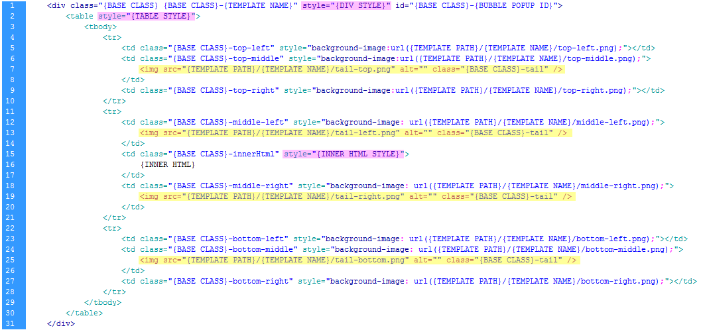

"jQuery Bubble Popup" is a plugin to display smart, animated & shadowed, "bubble" popups or tooltips with few lines of code in jQuery. The plugin support HTML5 and it is fully compatible with IE, Firefox, Chrome, Opera and Safari. It needs jQuery v.1.4.2 to run, the fastest and concise JavaScript Library.
First of all, add the following tags in the <HEAD> of the document
<link href="jquery.bubblepopup.v2.3.1.css" rel="stylesheet" type="text/css" /> <script src="http://ajax.googleapis.com/ajax/libs/jquery/1.4.2/jquery.min.js" type="text/javascript"></script> <script src="jquery.bubblepopup.v2.3.1.min.js" type="text/javascript"></script>
Then, to create a Bubble Popup, add the following script in any part of the <BODY> (assuming that exists at least a DOM element with "button" as class attribute)
<script type="text/javascript">
<!--
$(document).ready(function(){
//create a bubble popup for each DOM element with class attribute as "button"
$('.button').CreateBubblePopup({ innerHtml: 'This is a Bubble Popup!' });
});
//-->
</script>
This is a list of the main features of this plugin:
Download the latest version at http://plugins.jquery.com/project/jqBubblePopup
1) copy the content of the folder "Install" in the root of your website
2) in each page where you want to use the plugin, add the following <link> and <script> tags inside the tag <head>:
<!DOCTYPE HTML>
<html>
<head>
...
<link href="jquery.bubblepopup.v2.3.1.css" rel="stylesheet" type="text/css" />
<script src="http://ajax.googleapis.com/ajax/libs/jquery/1.4.2/jquery.min.js" type="text/javascript"></script>
<script src="jquery.bubblepopup.v2.3.1.min.js" type="text/javascript"></script>
...
</head>
<body>
...
</body>
</html>
jQuery Bubble Popup was tested and supports the following browsers:
* Shadowed Bubble Popups are displayed properly in all Internet Explorer versions; due to the incompatibility of certain animating functions of jQuery with IE 9 beta, the shadow is dropped only when the Bubble Popup is fully displayed. Others IE minor versions do not affect this, and the shadow is dropped instantly.
** In KHTML-based browser the only exception is that Bubble Popups are placed in the center of the target elements due to the incompatibility of jQuery with KHTML-based browsers; view jQuery browser compatibility.
// create a Bubble Popup for each element with the class attribute "myclassname"
$('.myclassname').CreateBubblePopup({ innerHtml: 'this is a text!' });
// remove any Bubble Popup associated to each element with class attribute "myclassname"
$('.myclassname').RemoveBubblePopup();
// return the options of a Bubble Popup that is associated to the first DOM element in the set of matched elements with class attribute "myclassname"
$('.myclassname').GetBubblePopupOptions();
// set a Bubble Popup for each element with the class attribute "myclassname"
$('.myclassname').CreateBubblePopup({ innerHtml: 'this is a text!' });
// show the Bubble Popup that is associated to the first DOM element in the set of matched elements with class attribute "myclassname" and with "this is a text!" as message
$('.myclassname').ShowBubblePopup();
// show the Bubble Popup with new options but do not save them
$('.myclassname').ShowBubblePopup({ width: 100, innerHtml: 'text is changed!' }, false);
// show the Bubble Popup with old options
$('.myclassname').ShowBubblePopup();
//create a javascript object with Bubble Popup options
var options = {
width: '100px',
innerHtml: 'text inside the Bubble Popup!'
};
// create bubble popups
$('.button').CreateBubblePopup( options );
// show the bubble popup of the first button
$('.button').ShowBubblePopup( options );
// set new options for all bubble popups
$('.button').SetBubblePopupOptions( options );
The following options change the way in which the popup is displayed :
position, align, distance, width, height, divStyle, tableStyle, innerHtml, innerHtmlStyle, tail, dropShadow, alwaysVisible, selectable
The following options control the mouse and popup events:
manageMouseEvents, mouseOver, mouseOut, openingSpeed, closingSpeed, openingDelay, closingDelay
The following options control the template, themes and other settings:
baseClass, themeName, themePath, themeMargins, afterShown, afterHidden, hideElementId
This is the complete list of all options with description:
| name | datatype | default value | description |
| position | String | 'top' | it sets the Bubble Popup on the left, top, right or bottom side of the target element; |
| align | String | 'center' | it sets the Bubble Popup alignment along the side of the target element; possible values are 'left', 'center' or 'right' when position is 'top' or 'bottom' otherwise 'top', 'middle' or 'bottom' when position is 'left' or 'right' |
| distance | Integer or String | '20px' | it sets the distance of the point from which the Bubble Popup comes |
| width | Integer or String | null | it sets the width of the Bubble Popup, an integer "10" or a string as "10px" is accepted; this option sets a CSS width property for the main <TABLE> in the markup template. |
| height | Integer or String | null | it sets the height of the Bubble Popup, an integer "10" or a string as "10px" is accepted; |
| divStyle | Object | {} | it is an object that contains CSS properties as {color: '#000000', margin:'0px'} the CSS properties inside this object will be added to the main <DIV> tag in the markup template; by default it is an empty object. |
| tableStyle | Object | {} | it is an object that contains CSS properties as {color: '#000000', margin:'0px'} the CSS properties inside this object will be added to the main <TABLE> tag in the markup template; by default it is an empty object. |
| innerHtml | String | null | The inner text inside the Bubble Popup, it can contains HTML tags. |
| innerHtmlStyle | Object | {} | it is an object that contains CSS properties as {color: '#000000', margin:'0px'} the CSS properties inside this object will be added to the <TD> tag container with "{BASE CLASS}-innerHtml" as class attribute in the markup template; by default it is an empty object. |
| tail | Object | { align:'center', hidden: false } |
"tail" is an object that contains the following properties for the Bubble Popup's tail
|
| dropShadow | Boolean | true | Drop the shadow (true) or not (false) for the Bubble Popup. |
| alwaysVisible | Boolean | true | if it's true, the Bubble Popup maintains the position and alignment if it's possible, also when the browser window is resized; otherwise the plugin changes (or restore back) the Bubble Popup's position to make it always visible in the browser's viewport, this works as well when browser window is resized. |
| selectable | boolean | false | when the mouse is over the target element, a bubble popup appears; then, if "selectable" is true you will be able to select the content inside it; if the mouse goes out of the button OR the bubble, the popup will be closed. By default, this option is false, then you will not be able to select the content because when the mouse is immediately out of the button, the popup will be closed. |
| manageMouseEvents | Boolean | true | by default, mouseout and mouseover events are automatically managed, however you can disable it and set this option to false; in this case, you'll need to declare mouseover and mouseout events manually in your code for each target DOM element with a Bubble Popup. Disabling manageMouseEvents is useful when you need to develop customized functions to show or hide the Bubble Popup or to get the full control over that, however you will lose all the checkings that the plugin is running to position and align the popup, so be careful when you turn off this feature.
also the following options don't take effect:
|
| mouseOver | String | 'show' | it adds a managed mouseover event to the target DOM element associated with the Bubble Popup; possible values are 'show' or 'hide' 'show' : when mouse is over the target element, show the Bubble Popup associated with it 'hide' : when mouse is over the target element, hide the Bubble Popup associated with it |
| mouseOut | String | 'hide' | it adds a managed mouseout event to the target DOM element associated with the Bubble Popup; possible values are 'show' or 'hide' 'show' : when mouse is out the target element, show the Bubble Popup associated with it 'hide' : when mouse is out the target element, hide the Bubble Popup associated with it |
| openingSpeed | Integer | 250 | it sets the opening speed. |
| closingSpeed | Integer | 250 | it sets the closing speed. |
| openingDelay | Integer | 0 | it sets a delay in milliseconds when the Bubble Popup is opening. |
| closingDelay | Integer | 0 | it sets a delay in milliseconds when the Bubble Popup is closing. |
| baseClass | String | 'jquerybubblepopup' | it sets the base class name saved in the CSS file "jquery.bubblepopup.v2.3.1.css"; generally You don't need to edit this option, it is only useful if other CSS classes declared inside the document interfere with the main class of the Bubble Popup; in this case, You will need only to choose a new valid name for the base class and set this option with it, then You need to replace all occurrences of the base class name "jquerybubblepopup" inside the "jquery.bubblepopup.v2.3.1.css" file with the new name. See the Template System for more information. |
| themeName | String | 'azure' | it sets the theme for the Bubble Popup; all the themes are saved inside the folder "jquerybubblepopup-theme/" ; possible values are: azure, black, blue, green, grey, orange, violet, yellow, all-azure, all-black, all-blue, all-green, all-grey, all-orange, all-violet, all-yellow |
| themePath | String | 'jquerybubblepopup-theme/' | it sets the relative path of the folder that contains all the themes |
| themeMargins | Object | { total: '13px', difference: '10px' } |
it is an object that contains the following properties
edit "themeMargins" attributes only if you need to edit or create a new theme; See the Template System for more information. |
| afterShown | Function | function(){} | It sets a callback function to execute when Bubble Popup is opened; You can set it as
$('.button').CreateBubblePopup({ |
| afterHidden | Function | function(){} | It sets a callback function to execute when Bubble Popup is closed |
| hideElementId | (String) Array | [] | Insert in the array all IDs of the elements that You want to hide; it is useful if any element interfere with a Bubble Popup. By default, it is an empty array. |
When a Bubble Popup is created with the following function...
$('#mybutton').CreateBubblePopup({ innerHtml: 'this is a text!' });
the plugin attaches a Bubble Popup to the target DOM element, in the above example the element with "mybutton" as id attribute.
The Bubble Popup's layout consists in a <DIV> container with a <TABLE> inside, and each <TD> has a transparent gif or png image as background
the Bubble Popup's markup (HTML) is hardcoded in the script (similar to a jQuery UI widget) then it's not needed to add any markup to your HTML document; it means that
This is the markup of the Bubble Popup created by the plugin:

<IMG> tags highlighted in yellow are optional and they match the tail's image; just one exists among those highlighted, and the plugin chooses what image to display based on the Bubble Popup's position.
When You set CSS properties at runtime with the "divStyle", "tableStyle" or "innerHtmlStyle" options, that properties are added to the inline style attributes highlighted in violet for each corresponding tag.
"divStyle", "tableStyle" or "innerHtmlStyle" options override any predefined CSS property in the stylesheet.
Remember that You can edit CSS properties at runtime, when the Bubble Popup is created/shown, otherwise as well by a CSS stylesheet.
The Bubble Popup's markup is controlled by the CSS file "jquery.bubblepopup.v2.3.1.css";
Inside that file, each CSS class has a prefix as "jquerybubblepopup" and this is the base class name.
If other CSS class definitions in the document are in conflict with the Bubble Popup's CSS class names, You will need only to choose a new valid base name, replace all occurrences of the old base class name "jquerybubblepopup" inside the "jquery.bubblepopup.v2.3.1.css" file with the new base name and set the "baseClass" option at runtime.
CSS classes control the style of each element inside the markup and You can access to each CSS properties of them to customize the layout:
Themes
All the themes are inside the "jquerybubblepopup-theme" folder; each theme can be applied to the Bubble Popup at runtime by the "themeName" option.
Each theme has different colors and background images; You can create your own theme drawing the images and saving them inside a folder's theme. Inside the folder "Themes", You will find the file "bubble-popup-themes.png" and it can help you to create your customized themes.
The CSS file "jquery.bubblepopup.v2.3.1.css" controls the styles of each theme; the plugin adds the class of the theme (for example ".jquerybubblepopup-azure")
to the main <DIV> container in the markup, then you can edit the style of any element inside the Bubble Popup markup for each theme.
Theme Margins
The margins in the following images, control the distance of the Bubble Popup from the target DOM element;
By default, "themeMargins.total" option (highlighted in red) and "themeMargins.difference" option (in orange) are respectively "13px" and "10px"; When the Bubble Popup is loaded, the plugin deletes the margin difference in orange, decreasing the distance from the target element and allowing that the tail is above the element.
if the Bubble Popup is on the left or right side of the target element (in other words, "position" option is 'left' or 'right') then the alignment of the Bubble Popup can be only vertical ("align" option is 'top', 'middle' or 'bottom')
and
if the Bubble Popup is on top or bottom side of the target element (in other words, "position" option is 'top' or 'bottom'), the alignment of the Bubble Popup can be only horizontal ("align" option is 'left', 'center' or 'right')
Remember that if you set correctly a "position" with a wrong "align" option, the plugin corrects it and "align" will be
'center' if the Bubble Popup position is 'top' or 'bottom'
or
'middle' if the Bubble Popup position is 'left' or 'right'
Note: the same rules, for the alignment and validation, are applied to the tail's image alignment.
<IMG> and <MAP> tags
If you create a Bubble Popup for a raw <IMG> tag make sure to set also image's width and height by a CSS stylesheet or inline style attribute, according to HTML5 specifications as <img src="image.jpg" style="width:186px; height:40px" /> ; otherwise, in same browser the plugin cannot get the image dimensions then the alignment will fail.
It's impossible to attach a Bubble Popup to a <MAP> tag because it has no top or left property and it will be still invisible inside the DOM, also jQuery cannot get any coordinates for a <MAP> tag; however you can attach a bubble popup to an <IMG> tag that uses that map tag and reposition the Bubble Popup where you want, getting the Bubble Popup's ID inside the DOM and set new top/left CSS properties.
About .CreateBubblePopup() method...
You can create obviously an empty Bubble Popup also with ".CreateBubblePopup()" without a themePath option; however I suggest you to set always a valid path for the theme, because if the path does not exists and for any impredictable reason the browser load it, you'll get an error!
Adding customized mouse events...
If you need to add customized mouseover or mouseout events to the target element, you don't need to disable managed events, because customized events do not affect managed events, then just add them with the jQuery syntax as "$('#element').mouseover(function(){ ... });" .
Bubble Popup plugin is strongly linked to the .data() function of the jQuery Library, this implies that it is not possible to create Bubble Popups for <object>, <applet> or <embed> elements in the DOM: "Due to the way browsers interact with plugins and external code, the .data() method cannot be used on <object>, <applet> or <embed> elements" , for more information, see: http://api.jquery.com/data/
However, You can wrap an <object>, <applet> or <embed> element with a <div> and attach to it a Bubble Popup.